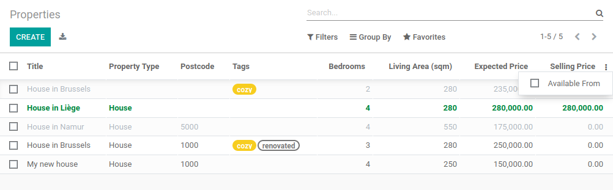
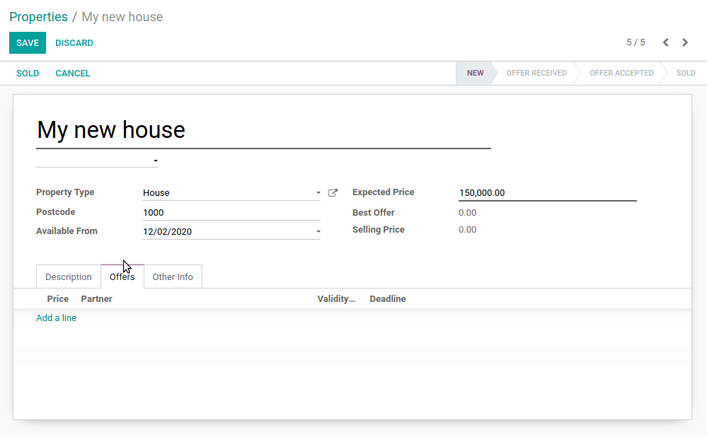

Chapter 12: Add The Sprinkles¶
Our real estate module now makes sense from a business perspective. We created specific views, added several action buttons and constraints. However our user interface is still a bit rough. We would like to add some colors to the list views and make some fields and buttons conditionally disappear. For example, the 'Sold' and 'Cancel' buttons should disappear when the property is sold or canceled since it is no longer allowed to change the state at this point.
This chapter covers a very small subset of what can be done in the views. Do not hesitate to read the reference documentation for a more complete overview.
Reference: the documentation related to this chapter can be found in Views.
Inline Views¶
注釈
Goal: at the end of this section, a specific list of properties should be added to the property type view:

In the real estate module we added a list of offers for a property. We simply added the field
offer_ids with:
<field name="offer_ids"/>
The field uses the specific view for estate.property.offer. In some cases we want to define
a specific list view which is only used in the context of a form view. For example, we would like
to display the list of properties linked to a property type. However, we only want to display 3
fields for clarity: name, expected price and state.
To do this, we can define inline list views. An inline list view is defined directly inside a form view. For example:
from odoo import fields, models
class TestModel(models.Model):
_name = "test.model"
_description = "Test Model"
description = fields.Char()
line_ids = fields.One2many("test.model.line", "model_id")
class TestModelLine(models.Model):
_name = "test.model.line"
_description = "Test Model Line"
model_id = fields.Many2one("test.model")
field_1 = fields.Char()
field_2 = fields.Char()
field_3 = fields.Char()
<form>
<field name="description"/>
<field name="line_ids">
<tree>
<field name="field_1"/>
<field name="field_2"/>
</tree>
</field>
</form>
In the form view of the test.model, we define a specific list view for test.model.line
with fields field_1 and field_2.
An example can be found here.
Exercise
Add an inline list view.
Add the
One2manyfieldproperty_idsto theestate.property.typemodel.Add the field in the
estate.property.typeform view as depicted in the Goal of this section.
ウィジェット¶
Reference: the documentation related to this section can be found in Field Widgets.
注釈
Goal: at the end of this section, the state of the property should be displayed using a specific widget:
Four states are displayed: New, Offer Received, Offer Accepted and Sold.
Whenever we've added fields to our models, we've (almost) never had to worry about how
these fields would look like in the user interface. For example, a date picker is provided
for a Date field and a One2many field is automatically displayed as a list. Odoo
chooses the right 'widget' depending on the field type.
However, in some cases, we want a specific representation of a field which can be done thanks to
the widget attribute. We already used it for the tag_ids field when we used the
widget="many2many_tags" attribute. If we hadn't used it, then the field would have displayed as a
list.
Each field type has a set of widgets which can be used to fine tune its display. Some widgets also take extra options. An exhaustive list can be found in Field Widgets.
Exercise
Use the status bar widget.
Use the statusbar widget in order to display the state of the estate.property as
depicted in the Goal of this section.
Tip: a simple example can be found here.
警告
Same field multiple times in a view
Add a field only once to a list or a form view. Adding it multiple times is not supported.
List Order¶
Reference: the documentation related to this section can be found in Models.
注釈
Goal: at the end of this section, all lists should display by default in a deterministic order. Property types can be ordered manually.
During the previous exercises, we created several list views. However, at no point did we specify which order the records had to be listed in by default. This is a very important thing for many business cases. For example, in our real estate module we would want to display the highest offers on top of the list.
モデル¶
Odoo provides several ways to set a default order. The most common way is to define
the _order attribute directly in the model. This way, the retrieved records will follow
a deterministic order which will be consistent in all views including when records are searched
programmatically. By default there is no order specified, therefore the records will be
retrieved in a non-deterministic order depending on PostgreSQL.
The _order attribute takes a string containing a list of fields which will be used for sorting.
It will be converted to an order_by clause in SQL. For example:
from odoo import fields, models
class TestModel(models.Model):
_name = "test.model"
_description = "Test Model"
_order = "id desc"
description = fields.Char()
Our records are ordered by descending id, meaning the highest comes first.
Exercise
Add model ordering.
Define the following orders in their corresponding models:
モデル |
Order |
|---|---|
|
Descending ID |
|
Descending Price |
|
Name |
|
Name |
View¶
Ordering is possible at the model level. This has the advantage of a consistent order everywhere
a list of records is retrieved. However, it is also possible to define a specific order directly
in a view thanks to the default_order attribute
(example).
Manual¶
Both model and view ordering allow flexibility when sorting records, but there is still one case we need to cover: the manual ordering. A user may want to sort records depending on the business logic. For example, in our real estate module we would like to sort the property types manually. It is indeed useful to have the most used types appear at the top of the list. If our real estate agency mainly sells houses, it is more convenient to have 'House' appear before 'Apartment'.
To do so, a sequence field is used in combination with the handle widget. Obviously
the sequence field must be the first field in the _order attribute.
Attributes and options¶
It would be prohibitive to detail all the available features which allow fine tuning of the look of a view. Therefore, we'll stick to the most common ones.
フォーム¶
注釈
Goal: at the end of this section, the property form view will have:
Conditional display of buttons and fields
Tag colors
In our real estate module, we want to modify the behavior of some fields. For example, we don't
want to be able to create or edit a property type from the form view. Instead we expect the
types to be handled in their appropriate menu. We also want to give tags a color. In order to add these
behavior customizations, we can add the options attribute to several field widgets.
Exercise
Add widget options.
Add the appropriate option to the
property_type_idfield to prevent the creation and the editing of a property type from the property form view. Have a look at the Many2one widget documentation for more info.Add the following field:
モデル |
Field |
Type |
|---|---|---|
|
Color |
Integer |
Then add the appropriate option to the tag_ids field to add a color picker on the tags.
Have a look at the FieldMany2ManyTags widget documentation
for more info.
In Chapter 6: Finally, Some UI To Play With, we saw that reserved fields were used for
specific behaviors. For example, the active field is used to automatically filter out
inactive records. We added the state as a reserved field as well. It's now time to use it!
A state field is used in combination with a states attribute in the view to display
buttons conditionally.
Exercise
Add conditional display of buttons.
Use the states attribute to display the header buttons conditionally as depicted
in this section's Goal (notice how the 'Sold' and 'Cancel' buttons change when the state is modified).
Tip: do not hesitate to search for states= in the Odoo XML files for some examples.
More generally, it is possible to make a field invisible, readonly or required based
on the value of other fields thanks to the attrs attribute. Note that invisible can also be applied
to other elements of the view such as button or group.
The attrs is a dictionary with the property as a key and a domain as a value. The domain gives
the condition in which the property applies. For example:
<form>
<field name="description" attrs="{'invisible': [('is_partner', '=', False)]}"/>
<field name="is_partner" invisible="1"/>
</form>
This means that the description field is invisible when is_partner is False. It is
important to note that a field used in an attrs must be present in the view. If it
should not be displayed to the user, we can use the invisible attribute to hide it.
Exercise
Use attrs.
Make the garden area and orientation invisible in the
estate.propertyform view when there is no garden.Make the 'Accept' and 'Refuse' buttons invisible once the offer state is set.
Do not allow adding an offer when the property state is 'Offer Accepted', 'Sold' or 'Canceled'. To do this use the
readonlyattrs.
警告
Using a (conditional) readonly attribute in the view can be useful to prevent data entry
errors, but keep in mind that it doesn't provide any level of security! There is no check done
server-side, therefore it's always possible to write on the field through a RPC call.
一覧表示¶
注釈
Goal: at the end of this section, the property and offer list views should have color decorations. Additionally, offers and tags will be editable directly in the list, and the availability date will be hidden by default.
 When the model only has a few fields, it can be useful to edit records directly through the list
view and not have to open the form view. In the real estate example, there is no need to open a form view
to add an offer or create a new tag. This can be achieved thanks to the editable attribute.
Exercise
Make list views editable.
Make the estate.property.offer and estate.property.tag list views editable.
On the other hand, when a model has a lot of fields it can be tempting to add too many fields in the
list view and make it unclear. An alternative method is to add the fields, but make them optionally
hidden. This can be achieved thanks to the optional attribute.
Exercise
Make a field optional.
Make the field date_availability on the estate.property list view optional and hidden by
default.
Finally, color codes are useful to visually emphasize records. For example, in the real estate
module we would like to display refused offers in red and accepted offers in green. This can be achieved
thanks to the decoration-{$name} attribute (see Field Widgets for a
complete list):
<tree decoration-success="is_partner==True">
<field name="name">
<field name="is_partner" invisible="1">
</tree>
The records where is_partner is True will be displayed in green.
Exercise
Add some decorations.
On the estate.property list view:
Properties with an offer received are green
Properties with an offer accepted are green and bold
Properties sold are muted
On the estate.property.offer list view:
Refused offers are red
Accepted offers are green
The state should not be visible anymore
Tips:
Keep in mind that all fields used in attributes must be in the view!
If you want to test the color of the "Offer Received" and "Offer Accepted" states, add the field in the form view and change it manually (we'll implement the business logic for this later).
検索¶
Reference: the documentation related to this section can be found in 検索 and Search defaults.
注釈
Goal: at the end of this section, the available properties will be filtered by default, and searching on the living area returns results where the area is larger than the given number.
Last but not least, there are some tweaks we would like to apply when searching. First of all, we
want to have our 'Available' filter applied by default when we access the properties. To make this happen, we
need to use the search_default_{$name} action context, where {$name} is the filter name.
This means that we can define which filter(s) will be activated by default at the action level.
Here is an example of an action with its corresponding filter.
Exercise
Add a default filter.
Make the 'Available' filter selected by default in the estate.property action.
Another useful improvement in our module would be the ability to search efficiently by living area. In practice, a user will want to search for properties of 'at least' the given area. It is unrealistic to expect users would want to find a property of an exact living area. It is always possible to make a custom search, but that's inconvenient.
Search view <field> elements can have a filter_domain that overrides
the domain generated for searching on the given field. In the given domain,
self represents the value entered by the user. In the example below, it is
used to search on both name and description fields.
<search string="Test">
<field name="description" string="Name and description"
filter_domain="['|', ('name', 'ilike', self), ('description', 'ilike', self)]"/>
</group>
</search>
Exercise
Change the living area search.
Add a filter_domain to the living area to include properties with an area equal to or
greater than the given value.